Operating Documentation
Direction 5500113, Rev# 3
Discovery MR450 1.5T Service Methods
Module Version 7.0, Version Date 1/13/10
Operating Documentation |
| Required Persons | Preliminary Reqs | Procedure | Finalization |
|---|---|---|---|
| 2 | Not Applicable | 30-75 mins | Not Applicable |
This procedure is for replacing the patient transport split bridge. Plan on about 30 minutes to remove the bridge. Double the time if you are reinstalling the same bridge components. Plan on at least 75 minutes if you are installing a new bridge that has to have the subcomponents assembled (see Replacing Bridge Part within Bridge Assembly).
| Item | Qty | Effectivity | Part# | Manufacturer | |
|---|---|---|---|---|---|
| Non-Magnetic Tool Kit | 1 | - | 5112581 | - | |
| Item | Qty | Effectivity | Part# | Manufacturer | |
|---|---|---|---|---|---|
| Refer to the FRU Manual | Varies | - | - | - | |
| ||||
| FERROUS MATERIAL HAZARD! | ||||
| THE PULLEY ASSEMBLY CONTAINS PARTS MADE WITH FERROUS COMPONENTS. HOLDING THIS ASSEMBLY TOO CLOSE TO THE MAGNET BORE WILL FORCIBLY ATTRACT IT TO THE MAGNET. | ||||
| TO PREVENT POSSIBLE BODILY INJURY OR DAMAGE TO COMPONENTS, REMOVE THE ASSEMBLY DIRECTLY. do NOT MOVe IT IN THE MAGNETIC FIELD MORE THAN IS NECESSARY. |
| ||||
| FERROUS MATERIAL HAZARD! | ||||
| THE FRONT BRIDGE SUPPORT ASSEMBLY CONTAINS PARTS MADE WITH FERROUS COMPONENTS. HOLDING THIS ASSEMBLY TOO CLOSE TO THE MAGNET BORE WILL FORCIBLY ATTRACT IT TO THE MAGNET. | ||||
| TO PREVENT POSSIBLE BODILY INJURY OR DAMAGE TO COMPONENTS, REMOVE THE ASSEMBLY DIRECTLY. do nOT MOVe IT IN THE MAGNETIC FIELD MORE THAN IS NECESSARY. |
| ||||
| HEAVY BRIDGE WEIGHT | ||||
| THE BRIDGE HAS A HEAVY LIFT WEIGHT OF 85 POUNDS. | ||||
| USE TWO (2) PEOPLE TO LIFT THE BRIDGE. |
Position the LPCA to the far rear of the enclosure, release the cradle from the LPCA and pull it back onto the table, and undock the patient table.
Detach the cradle from the LPCA.
Pull cradle back to table and undock table.
Follow all lockout/tagout procedures by turning off the applicable breaker in the Power Distribution Unit (PDU) (see LOTO for RF and PEN Cabinets and Magnet Room Electronics).
Remove two (2) rear pedestal covers (see Illustration 1).
Illustration 1: Removing Rear Pedestal Covers

Loosen the drive belt tensioner and then loosen the two (2) securing screws (see Illustration 2).
Illustration 2: Drive Belt Tensioner
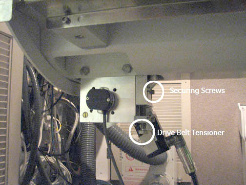
Remove the LPCA cover by removing four (4) screws (see Illustration 3).
Illustration 3: LPCA Cover
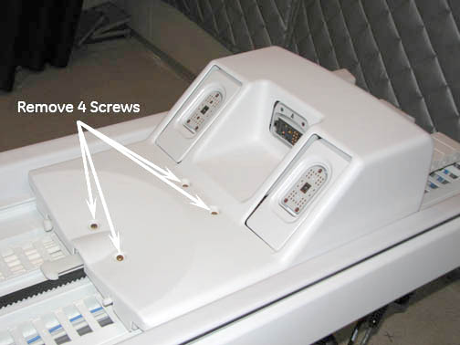
Unscrew the two (2) nuts on each of the two belt clamps that hold the belt clamp plate into place (see Illustration 4).
Illustration 4: Belt Clamps
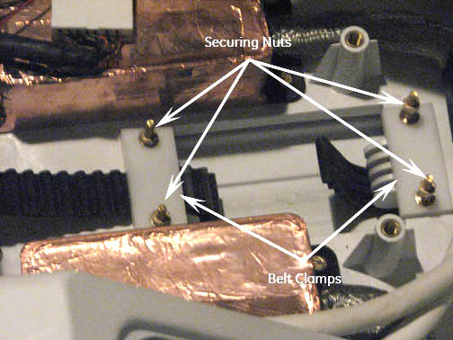
Remove the four (4) screws holding the belt guide cover, located top rear of the Rear Pedestal, then remove the cover (see Illustration 5).
Illustration 5: Belt Guide Cover
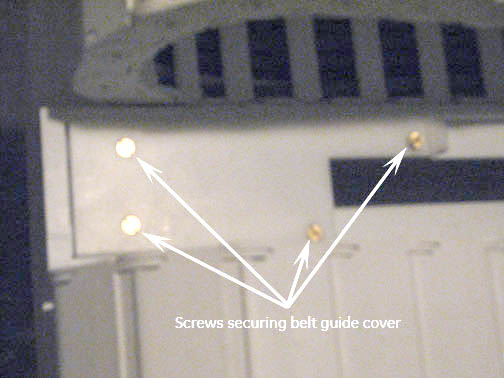
Pull the drive belt free from the rear pedestal. Carefully unthread the drive belt from the rear pulley (see Illustration 6).
| NOTE: | To continue with Bridge removal procedure, continue with Step 11. To Remove and replace Longitudinal Drive Belt (see Longitudinal Drive Belt Replacement). |
Illustration 6: Drive Belt Threading through the Rear Pulley

| NOTE: | If the same bridge will be re-installed, leave the belt on the front bridge. It will be easier to re-install. |
At the rear of the split bridge, remove the four (4) M10 nuts and washers that attach the rear pedestal to the split bridge using the 17mm wrench (see Illustration 7).
Illustration 7: Location of Nuts at Rear of Split Bridge
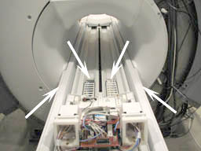
Using a 5 mm Allen wrench, remove the two (2) M6 Screws holding the front bridge cover in place (see Illustration 8) and remove the cover.
Illustration 8: Lower Cosmetic Cover
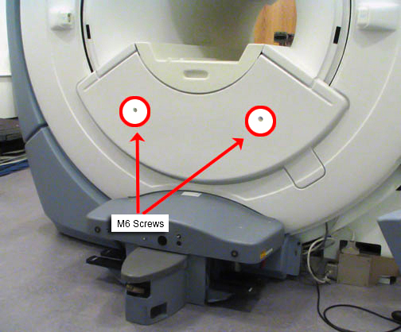
Using a 17 mm wrench, remove the two (2) M10 bridge bracket bolts. When these bolts are removed, the height adjuster and spacer will no longer be secured (see Illustration 9).
Illustration 9: Bridge Bracket Height Adjuster and Spacer
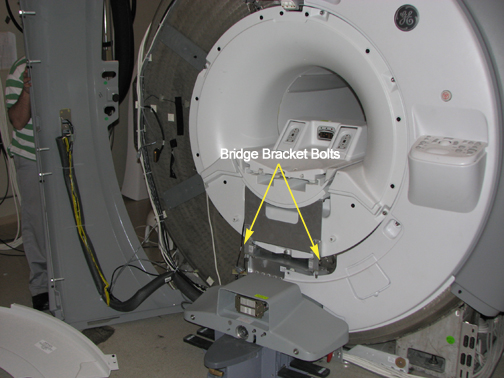
| ||||
| HEAVY BRIDGE WEIGHT | ||||
| THE BRIDGE HAS A HEAVY LIFT WEIGHT OF 85 POUNDS. | ||||
| USE TWO (2) PEOPLE TO LIFT THE BRIDGE. |
Slide the bridge out from magnet. Take care to ensure the drive belt comes along with the bridge. There are wheels on the rear of the bridge for easy transport.
Lay bridge on its top and use the 5 mm Allen wrench to remove the four (4) M10 Allen screws that attach the bridge mounting bracket (see Illustration 10).
Illustration 10: Bridge Bracket Screw Locations
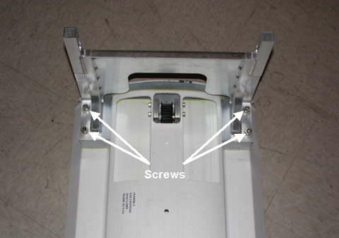
Remove belt from bridge (see Illustration 11).
Illustration 11: Pulley with Belt Removed

| ||||
| FERROUS MATERIAL HAZARD! | ||||
| THE PULLEY ASSEMBLY CONTAINS PARTS MADE WITH FERROUS COMPONENTS. HOLDING THIS ASSEMBLY TOO CLOSE TO THE MAGNET BORE WILL FORCIBLY ATTRACT IT TO THE MAGNET. | ||||
| TO PREVENT POSSIBLE BODILY INJURY, OR DAMAGE TO COMPONENTS, move the bridge out of the magnetic field before continuing. |
Flip the bridge so the top is facing up. Using a straight blade screwdriver, remove the two screws (see Illustration 12).
Illustration 12: Screw Location - Under Bridge Top
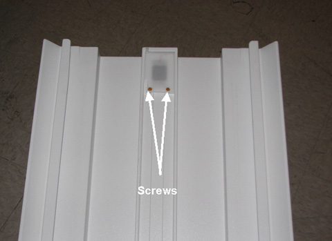
Remove pulley.
| ||||
| HEAVY BRIDGE WEIGHT | ||||
| THE BRIDGE HAS A HEAVY LIFT WEIGHT OF 85 POUNDS. | ||||
| USE TWO (2) PEOPLE TO LIFT THE BRIDGE. |
If necessary, reinstall (or install new) pulley ASM and drive belt on to new bridge by reversing the steps in Replacing Bridge Part within Bridge Assembly.
To reinstall the bridge, perform the steps in Removing Front Bridge in reverse order.
| NOTE: | When replacing the belt, move the LPCA back on the rear bridge until the rollers extend past the notch in the guide. This allows the LPCA to be lifted for easier threading of the belt (see Illustration 13). |
Illustration 13: LPCA Roller
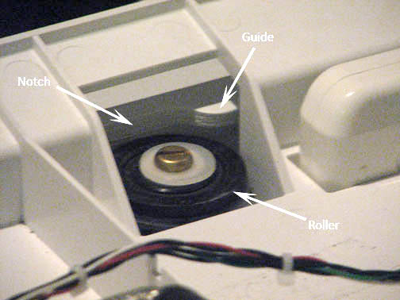
Route the longitudinal drive belt as shown in Illustration 6.
Reattach belt guide covers at the LPCA before reattaching the belt guide cover at the table. The front clamp should have 3 exposed belt teeth and 15 teeth on the back clamp with the belt tensioner fully down and secure.
Align the Bridge in the Z-direction (in/out of the magnet bore) until front surface of Bridge aligns with front surface of end bell to within +/- 3mm.
Alignment to front end bell is done by pushing or pulling Bridge with Support Upper attached which allows the L-Brackets to slide toward or away from the magnet.
When aligned, tighten the four M10 screws attaching L-Bracket to the Support Lower.
| NOTE: | If more adjustment is needed for the Z-axis adjustment, loosen the four bolts (two on each side) holding the Support Lower to the Bridge Support Magnet Mount Assembly. |
Move the Support Lower until the +/-3mm bridge-to-end bell alignment has been achieved (see Illustration 14).
Re-tighten bolts.
Illustration 14: Z-Direction Alignment
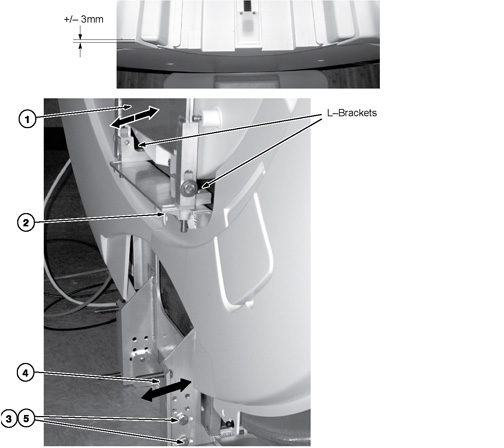
Align the Bridge in the Y-direction (up/down in the magnet bore) to within 502mm - 505mm (Discovery MR750 and MR450) or 582mm - 585mm (Optima MR450w) (see Illustration 15).
| NOTE: | Measuring tool shown below is not provided. |
Adjust the M10 Nylon nuts at the bottom of the Bridge Support Upper bracket to raise and lower Bridge to attain the 502mm - 505mm distance (Discovery MR750 and MR450) or 582mm - 585mm distance (Optima MR450w) in between the top of the patient bore and the surface under the belt on the bridge at both the front and back of the bridge.
A level can be used to make sure bridge is level in the X-direction. Adjust M10 Nylon nuts as necessary.
Tighten the two (2) M10 bolts and the M10 Nylon Hex Nuts on each side.
Illustration 15: Y-Direction Alignment
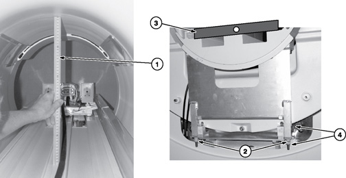
Align the Bridge in the X-direction (left/right in the magnet bore) by shifting entire front Bridge Support Assembly until the distance between Bridge and RF Body Coil is equal on both sides of the Bridge. The dock floor bolt may need to be loosened in order to shift the Bridge Support Assembly.
| ||||
| Bridge must not be in contact with the RF Body Coil along its entire length. | ||||
Tighten the two (2) M10 bolts that fasten the Bridge Support Assembly to the magnet feet.
Reattach front bridge cover.
Illustration 16: X-Direction Alignment
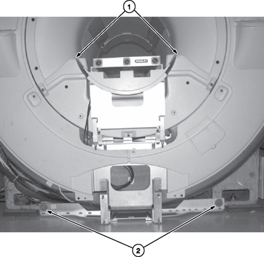
Refer to Y-Direction Bridge Alignment section for distance between bridge and top of the RF Coil.
| NOTE: | The Bridge does not need to be “level” to Earth in the Z-direction in achieving the alignment of bridge surfaces. Therefore, you do NOT need a level at this point of the installation, you DO NEED a straight edge. (Though you can use a level as a straight edge.) |
Use a Straight Edge to make sure that the front and rear Bridge surfaces, on both sides of Bridge where the LPCA wheels roll, are even. This will provide smooth travel for the Carriage wheels. If uneven, refer to next step.
Make sure the Rear Pedestal and the Bridge are flush with the rear End Bell surface to 1mm below the rear End Bell surface; and that the Front Split Bridge is even with Rear Split Bridge when tightening the two together.
At this point in adjusting the Rear Pedestal, use a level to make sure the Bridge on the rear pedestal is level in the X-direction. Adjust Rear Pedestal feet as necessary.
Illustration 17: Rear Bridge Height Adjustment
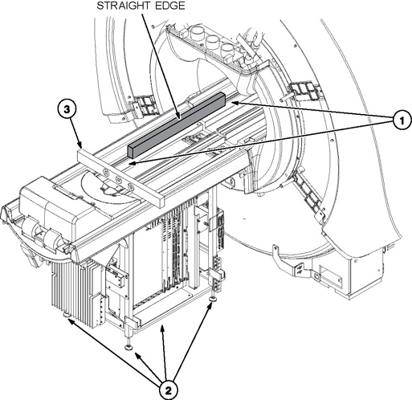
Gap between Rear Split Bridge and left and right Rear Pedestal Bumpers should be uniform along entire length.
Adjustment for left and right Rear Pedestal Bumpers is made by loosening four screws underneath each bumper and moving bumper until uniform gap is made.
Illustration 18: Front and Rear Bridge Alignment Adjustment
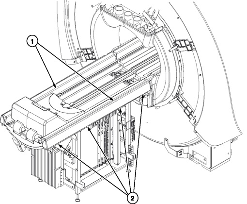
Reattach LPCA cover and any other covers removed.
Confirm table top height is properly adjusted and level.
Perform a goodbye scan to ensure that the system is functioning properly.